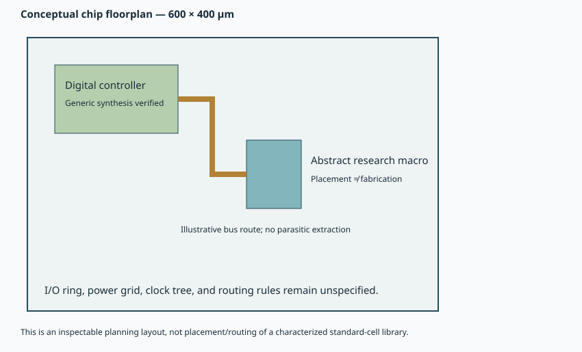

Chapter 8 · Chip and package · 10–14 hours
Physical integration and its evidence boundaries
What does “CMOS-compatible” actually establish?
A material can be deposited near a conventional transistor and still lack a manufacturable integration flow. A functioning test device does not supply design rules, library characterization, yield data, or a memory macro that a chip designer can place and route. Physical implementation requires those additional contracts.
Prerequisites: Chapters 5–7. Objectives: follow cross-section to chip hierarchy; distinguish synthesis, placement, routing, and verification; reason about thermal budget and yield; and inspect an abstract macro without mistaking it for a finished bitcell.
8.1 The hierarchy carries different kinds of information
A device cross-section describes layers and geometry. A cell schematic specifies electrical connectivity. An array organization specifies selection and sharing. A macro abstract supplies the block's footprint, pins, obstructions, and interface assumptions to higher-level design. A chip floorplan locates blocks and reserves routing and power resources. None of these views can replace the others.
Our memory abstract stores 128 logical bits in sixteen 8-bit words. Its chosen footprint is 80 by 100 µm, with a 4 µm symbolic cell pitch and generous periphery. Those dimensions make the hierarchy readable. They are independent of the hypothetical dense-array assumptions in the numerical system study; scaling the demonstrator footprint to claim that study's density would mix unrelated models.

8.2 A PDK is a process contract
A process design kit, or PDK, provides the layer vocabulary, device definitions, design rules, electrical models, and verification support for a manufacturing process. Standard-cell libraries add characterized gates and registers, their layouts, timing, power, and permitted orientations. A memory macro also needs accurate boundary pins and internal behavior over process, voltage, and temperature corners.
Open conventional-process resources such as SKY130 provide documented transistor and standard-cell families. Their availability does not imply support for an experimental HZO/Al₂O₃/HZO device, its oxygen-reservoir electrode, or an oxide-channel integration sequence. A designer may use a conventional library for the controller while treating the new memory as a custom block, but the physical and electrical interface still requires characterization. SKY130 standard-cell documentation.
No compatible research-device PDK, foundry layer mapping, or characterized memory-macro views were acquired for this assignment. The feasible implementation therefore includes generic digital synthesis and an abstract research macro. It does not claim standard-cell placement/routing or transistor-level implementation of the experimental memory. Installing a conventional PDK alone would not resolve the research-device boundary.
8.3 What each physical-design step would establish
| Step | Input and result | What it does not prove |
|---|---|---|
| Synthesis | RTL → logic network or library cells | That an experimental analog device exists in the process. |
| Floorplan / placement | Dimensions, pins, cells → legal positions | Routability or timing closure. |
| Clock-tree synthesis | Clock constraints → buffered distribution | All data paths meet setup and hold. |
| Routing | Placed netlist → wires and vias | Correct connectivity and manufacturing legality without verification. |
| DRC / LVS | Design-rule and layout-versus-schematic checks | Yield, lifetime, or correct model calibration. |
| Extraction / timing | Parasitics and library models → delays and margins | Validity outside characterized conditions. |
Static timing analysis compares path delays with clock and interface constraints without enumerating every input waveform. Setup time constrains when data must settle before a sampling edge; hold time constrains how long it must remain stable after that edge. Clock skew can help one requirement and hurt the other. A functional testbench with zero-delay generic gates cannot establish either margin.
8.4 The delivered abstract views are deliberately explicit
LEF describes a macro footprint and 25 boundary pins. GDS contains a boundary and 128 symbolic bit locations on arbitrary layer numbers. The macro ledger states geometry, protocol timing, unknown power, and the distinction between abstract layers and foundry layers. The file formats are editable and machine-readable; their existence is not physical signoff.
The LEF geometry passes pin-containment checks, SVG documents pass XML parsing, and the GDS byte stream passes record-boundary and geometry-count checks. These are format and geometry checks. They are not foundry design-rule checking or layout-versus-schematic verification. No characterized Liberty timing/power file is invented for the research macro.
To replace the abstract block with a real macro, obtain a consistent set: device/process model, bitcell layout, decoder and driver implementation, sense strategy, operating voltages, DRC/LVS decks, parasitic extraction rules, timing/power characterization, and interface corner data. All must refer to the same stack and process revision. Combining attractive parameters from unrelated papers cannot supply that consistency.
8.5 Placement is an optimization problem with geometry
The numerical placement exercise uses a separate idealized 10 by 10 mm plane. Three interface points have weights representing relative traffic. For candidate macro center $(x,y)$ and interface points $(x_i,y_i)$, weighted Manhattan wirelength is $L_w=\sum_iw_i(|x-x_i|+|y-y_i|)$. The metric approximates orthogonal routing length; it does not represent extracted RC delay.
Without obstacles, minimizing weighted absolute distances separates into an x and a y weighted-median problem. An obstacle or keepout can invalidate a naive unconstrained median. The script enumerates a 0.25 mm grid, excludes a central keepout, and finds a minimum cost of 26 weighted mm. Several positions can tie; the chosen first minimizer is not a unique physical optimum. The check is global over the enumerated grid only.
Replacing points by finite rectangles adds boundary containment and non-overlap constraints. Adding congestion requires accounting for competing nets and routing capacity. A shortest geometric route may be worse electrically if it passes through a hot region or uses resistive layers. This sequence makes the modeling ceiling visible rather than declaring a placement “optimized” without its objective.
8.6 Process temperature, operating temperature, and packaging
A process thermal budget describes temperatures, durations, and sequence during fabrication. Operating temperature describes conditions while the device performs its function. A brief anneal can improve crystallinity while long electrical operation at a lower temperature causes degradation. For monolithic three-dimensional integration, later processing must also preserve structures already built below.
The oxide-channel thermal study illustrates this dependence on sequence and capping. A reported 650 °C survival interval applies to its tested devices and protocol. It does not imply that every metal, dielectric, bond interface, or package can survive the same sequence. Nor does “BEOL-compatible” establish an integrated full-chip yield without a complete process demonstration. Thermal-processing study.
During operation, a simple thermal-resistance model gives $T_j=T_a+R_\theta P$, where $T_j$ is junction temperature, $T_a$ ambient or reference temperature, $R_\theta$ thermal resistance in K/W, and $P$ dissipated power. This lumped steady-state relation omits spatial hotspots and transients. Since leakage and reliability depend on temperature, a memory-efficiency claim can be altered by package placement and cooling.
8.7 Density is not usable silicon per dollar
Under a simple independent-defect model, if fatal defects occur with mean density $D_0$ per area and a die has sensitive area $A$, the zero-defect probability is $Y=e^{-D_0A}$. This follows from the zero-count probability of a Poisson process with mean $D_0A$. Doubling density at the device level may reduce area, but introducing a less mature process can increase effective defect density or add failure modes absent from this model.
Redundant rows, repair, chiplets, and known-good-die testing can change the effective yield calculation. Three-dimensional bonding adds its own interface and alignment yield. A layered-memory density projection should therefore state whether it counts cell area, macro area, wafer yield, or usable packaged capacity. These are different denominators.
8.8 Exercises and solutions
1. Read a physical-design claim
Does a clean GDS file plus a passing controller testbench establish a fabricated memory?
Solution. No. GDS stores geometry; the testbench establishes selected digital behavior. Process layers, devices, DRC, LVS, extraction, characterization, and fabrication evidence remain necessary. An abstract macro cannot become a physical FeFET simply by naming its cell “ferroelectric.”
2. Thermal headroom
If $T_a=35$ °C and $R_\theta=0.4$ K/W, what steady-state power reaches a 75 °C junction limit?
Solution. $P=(75-35)/0.4=100$ W under the lumped model. A hotspot can reach the limit earlier; validate the thermal resistance and spatial model before treating 100 W as a product specification.
3. Yield tradeoff
A Poisson model has $D_0A=0.2$. What happens if area doubles at unchanged defect density?
Solution. Yield changes from $e^{-0.2}\simeq0.819$ to $e^{-0.4}\simeq0.670$. This model excludes clustering and repair. It demonstrates why area reductions and process maturity must be evaluated together.
You can now identify exactly which physical-design evidence is present and which dependency blocks fabrication. The next chapter connects delivered memory service to AI workloads.